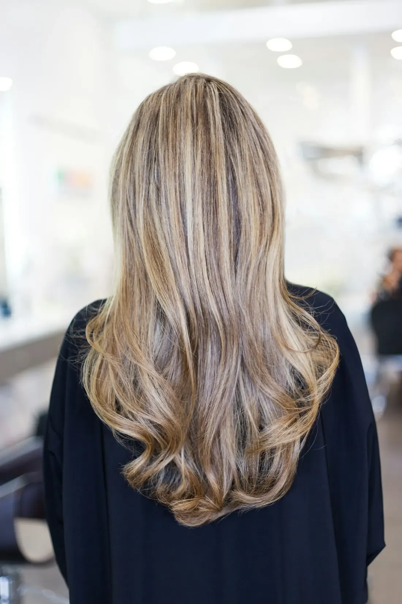
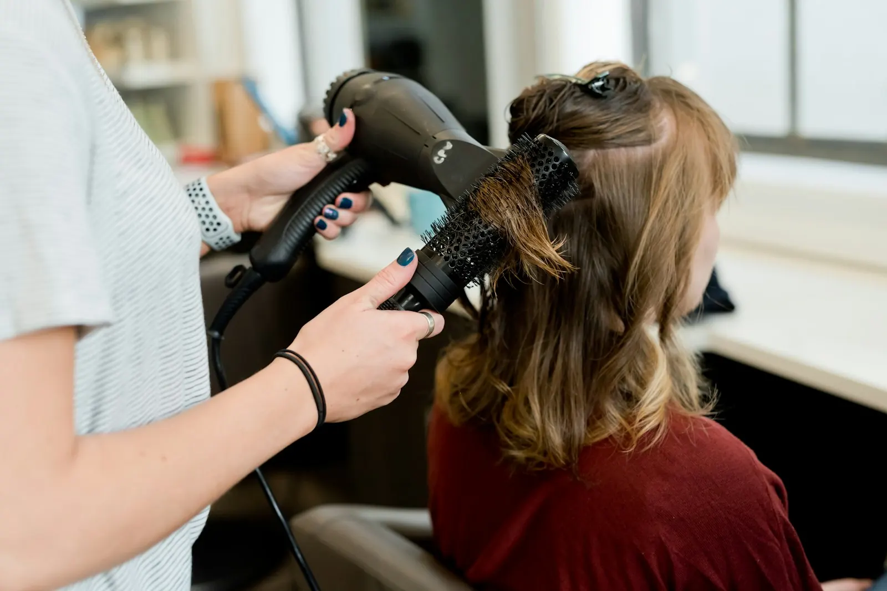
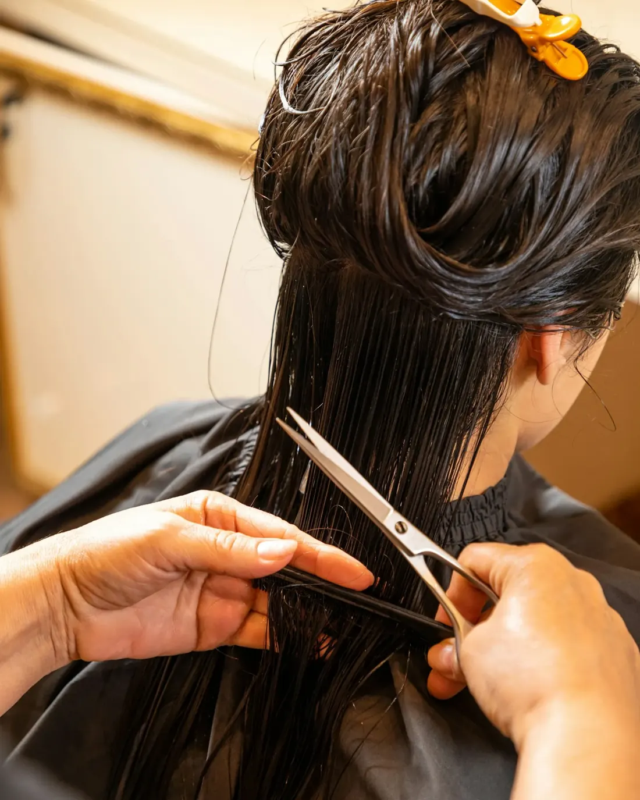
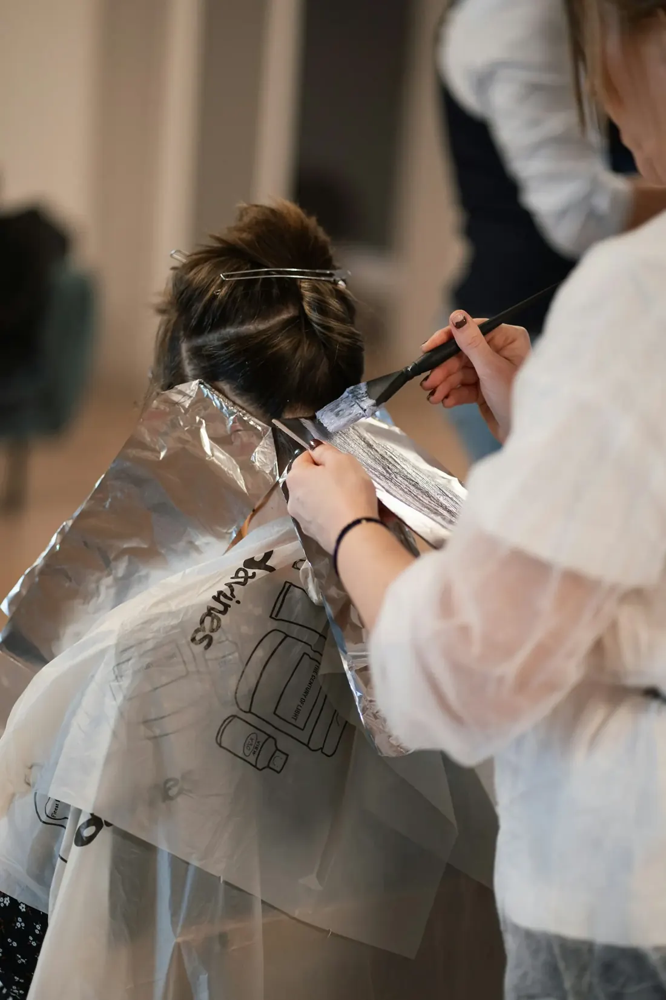
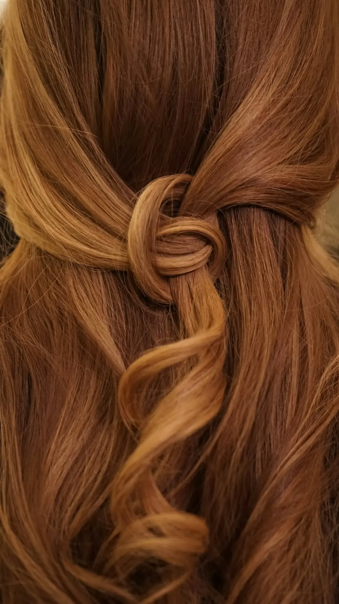
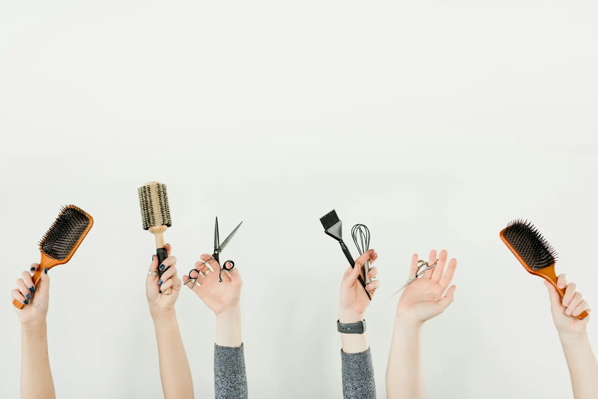

een

Je vertelt wat je wil
Of net wat je niet meer wil. Caro kijkt samen met jou in de spiegel en zegt eerlijk wat haalbaar is met jouw haar.
Bij Haarstudio Caro zit je in de stoel bij Caro zelf. Ze luistert eerst, zegt eerlijk wat bij je haar past en neemt de tijd om het goed te doen. Knippen, kleuren of een frisse brushing.
 Caro
Caro
Ze kent haar vak heel goed, ze geeft goed advies.Google-review
Geen lopende band en geen kapsel dat je thuis niet meer terugkrijgt. Een afspraak bij Caro verloopt rustig, en je weet altijd waarom ze iets doet.

Of net wat je niet meer wil. Caro kijkt samen met jou in de spiegel en zegt eerlijk wat haalbaar is met jouw haar.

Knippen, kleuren of brushen, zonder haast. Onderweg legt ze uit wat ze doet, zodat je weet waar je aan toe bent.
Je krijgt een paar tips mee om je haar zelf in model te krijgen. Zo ziet het er na een week nog altijd goed uit.
Twijfel je of iets bij je past? Vraag het gerust bij het maken van je afspraak. Caro zegt het je eerlijk.
Puntjes eraf of een heel andere lijn. Caro knipt met oog voor hoe je haar valt, zodat je 's morgens niet met je spiegel moet vechten.
Uitgroei bijwerken, grijs wegwerken of een nieuwe tint. Altijd na een goed gesprek over wat je haar aankan.

Voor een feest, een belangrijke dag of gewoon omdat het deugd doet.
Stuur Caro een foto van je haar en van wat je in gedachten hebt. Dan bekijk je samen wat mogelijk is, nog voor je in de stoel zit.
Super tevreden! Professionele uitleg, heel vriendelijk. Echt een aanrader!
G
Uit de reviews op Google

Haarstudio Caro is een kleine, persoonlijke studio. Je wordt geholpen door Caro zelf, van het eerste gesprek tot de laatste föhnbeurt.
Ze neemt de tijd om uit te leggen wat ze doet en zegt het eerlijk als iets niet bij je haar past. Zo ga je buiten met haar waar je je goed bij voelt, en niet met een kapsel waar je niet om gevraagd had.

Super lief en vriendelijk. Ze kent haar vak heel goed, ze geeft goed advies.
Eerste keer bij Caro. Super vriendelijk en heel tevreden met het resultaat 😊
Hier in de Bloemfonteinstraat. Heel professioneel, heel gemakkelijk, aangenaam. Wij komen terug. Op afspraak!
Heel kundig en lief kapstertje.
Altijd op afspraak. Bel of stuur een berichtje om een moment vast te leggen.

Laat gerust weten wat je wil laten doen, dan zoekt Caro een moment dat voor jou past. Ook 's avonds op donderdag.
0468 01 76 55Ik maakte deze demo voor jullie om te tonen wat er kan. Na een kort gesprek maak ik er iets veel persoonlijkers van, helemaal naar jullie wens.
Vrijblijvend. Ik kom langs of we bellen.
Op maat, op jullie eigen domein.
Geen voorschot. Jullie betalen pas als alles klaar is.
Hosting, domeinnaam en kleine wijzigingen, zoals nieuwe openingsuren.
Omdat een voorbeeld meer zegt dan een mail. Zo zien jullie meteen wat er kan, en het kost jullie niets.
Nee. Het gesprek is vrijblijvend. Vinden jullie het niks, dan is het daarmee gedaan.
Na ons gesprek staat jullie site binnen 10 tot 14 dagen online.
Zeker. Jullie domeinnaam kan gewoon blijven, de nieuwe site komt in de plaats van de oude.
Nee, dat doe ik op basis van ons gesprek. Eigen foto's zijn mooi meegenomen, maar niet nodig om te starten.